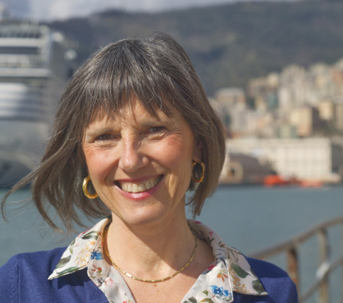
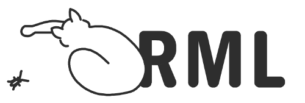

Viviana Mascardi

Contact details
DIBRIS - Dipartimento di Informatica, Bioingegneria, Robotica e Ingegneria dei Sistemi
Via Dodecaneso, 35, 16146 Genova - ITALY
.png)
Phone: +39 010 3536664
Email address: viviana.mascardi@unige.it
Married to Davide Ancona, mother of Samuele, Simone and Micol
Scientific (non funded) projects
-
 VEsNA Toolkit: an ecosystem of software tool compliant with the Virtual Environments via Natural language Agents (VEsNA) vision
VEsNA Toolkit: an ecosystem of software tool compliant with the Virtual Environments via Natural language Agents (VEsNA) vision
-
Fantastic MASs and where to find them: links to publicly available software developed inside the multiagent systems research area:
frameworks for building MASs, add-ons and extensions of such frameworks, and implemented MASs
-

the Runtime Monitoring Language: a system agnostic domain specific language for runtime monitoring and verification
Funded projects
-
ENGINES:
ENGineering INtElligent Systems around intelligent agent technologies,
PRIN 2022. Total MUR contribution: 213.185 Euro. UO MUR contribution: 52.902 Euro. Start: September 2023. End: February 2026.
Role: Coordinator of the UniGE Unit. See the UO project's results in the UniGE
ENGINES Web Page
- FAIR, Future Artificial Intelligence Research,
European Union, Next Generation EU, MUR, ItaliaDomani PNRR.
Start: April 2024. End: September 2025. Role: Participant. See Viviana Mascardi's contribution to the project in
Viviana's FAIR
Web Page
- Next Generation UPP,
European Union, Programma Operativo Nazionale Governance e Capacità Istituzionale 2014-2020,
SIE funds. Share of contribution managed by Viviana Mascardi: 50.000 Euro, besides funded scholarships.
Start: April 2022. End: December 2023. Role: Participant.
- DigForASP, DIGital FORensics: evidence Analysis via intelligent Systems and Practices. COST action. Start: 2018. End: 2022. Role: WG4 leader.
- SAFEPOST: Reuse and development of Security Knowledge assets for International Postal supply chains. FP7
project. Total budget: 14.986.407 Euro. UO Budget: 255.600 Euro. Start: 2012. End: 2016. Role: Participant.
- Indiana MAS and the Digital Preservation of Rock Carvings, A multi-agent system for drawing and natural language understanding aimed at preserving rock carvings. Role: Principal Investigator. MIUR FIRB 2010 (National Funding). Total budget: 747.600 Euro. UO Budget: 381.100 Euro. Start: 2012. End: 2015. Role: Principal Investigator